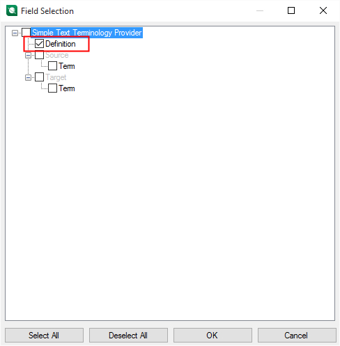
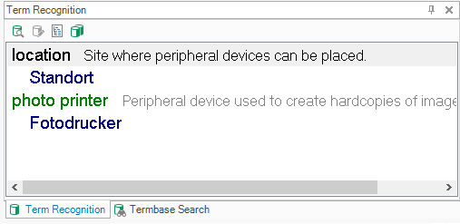

Setting the Glossary Fields
In addition to source and target terms, a terminology source can include additional information such as definitions, notes, or examples. This additional information is referred to as descriptive fields.
Declaring the Definition Field
The glossary text file includes a definition in the fourth column:
1;photo printer;Fotodrucker;Peripheral device for creating hardcopies of pictures.
This information can also be shown when looking up terminology in Trados Studio. When the descriptive field is declared, it can be selected in the Trados Studio UI:

If you select the field for display, the content (for example, the definition) is shown alongside the search results:

- Go to the MyTerminologyProvider.cs class.
- Add the following member. It creates a descriptive field labeled 'Definition' that can contain a text string. The example field has the field level 'Entry', meaning it is not specific to a particular term or language and instead applies to the whole entry.
// Creates the termbase definition by declaring the Definition text field.
// This allows our terminology provider to also display the Definition field content
// in the Termbase Search and Terminology Recognition windows.
public IList<DescriptiveField> GetDescriptiveFields()
{
var result = new List<DescriptiveField>();
var definitionField = new DescriptiveField
{
Label = "Definition",
Level = FieldLevel.EntryLevel,
Type = FieldType.String
};
result.Add(definitionField);
return result;
}
- Call this function from the following property, which also calls the GetLanguages() method to create the full terminology source definition. The terminology source definition is then exposed in the Trados Studio UI, where you can select which fields to display (see screenshot above).
//Creates the terminology source definition, i.e. the languages in the glossary and any
//additional descriptive fields, in this case the 'Definition' field
public Definition Definition
{
get
{
return new Definition(GetDescriptiveFields(), GetLanguages().Cast<DefinitionLanguage>().ToList());
}
}